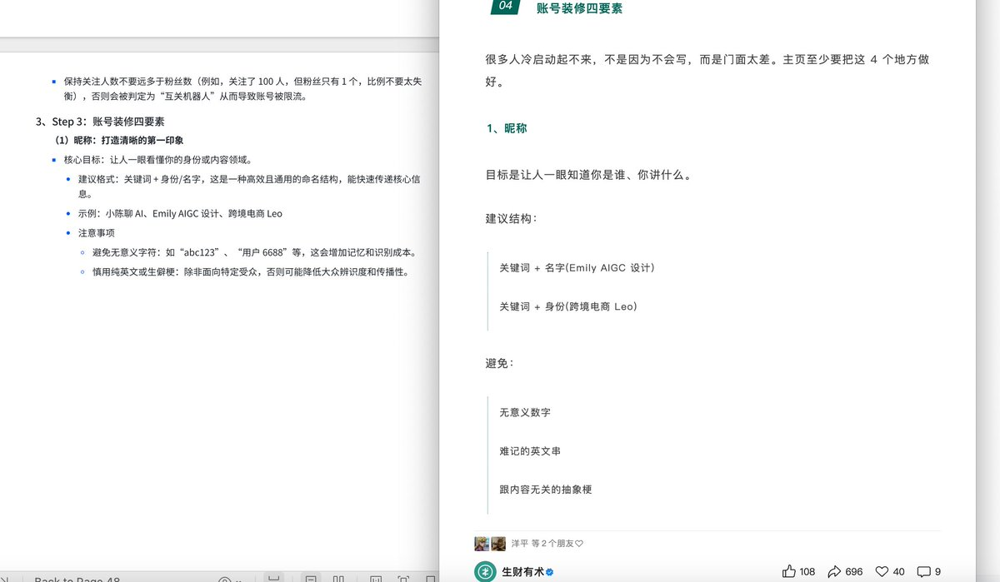
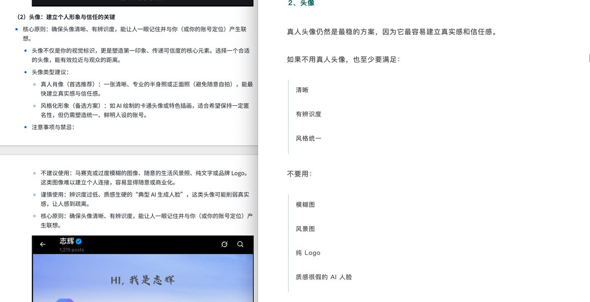
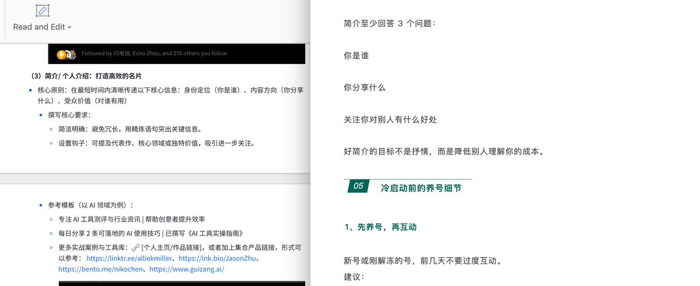

奶昔🥤
@realNyarime
@GoSailGlobal 他们那群人不就专干这些事，之前洗他们的稿还不乐意了，骂我一夜就能得到几十万的流量😂



Jason Zhu
@GoSailGlobal
生财还发了黄小木，作为x增长案例的内容
我他妈一看连案例都搬运的我手册里的，虽然我是开源，但注明来源是最起码的道德底线
连案例都抄😥
https://t.co/cJrtlDSikz
我的开源手册：https://t.co/vTbg5b7hXp https://t.co/Of1h4qoRfW